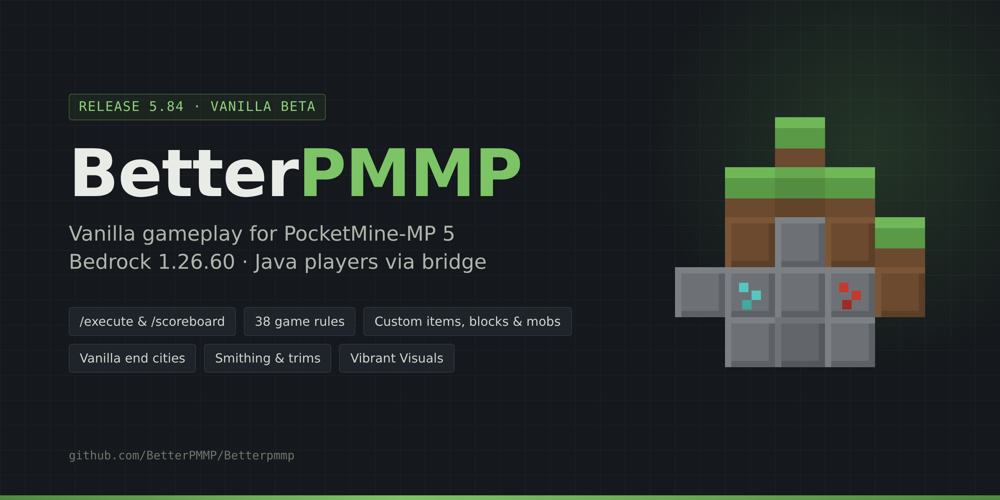

Vanilla server software for Minecraft: Bedrock Edition 1.26.60, developed by Leon Development.
BetterPMMP is based on PocketMine-MP 5 and keeps its plugin API, so existing plugins keep working. On top of that it adds what PocketMine is missing for survival: vanilla terrain, structures, redstone, mob AI, the Nether and the End with their bosses, and Java Edition players on the same server.
1.18+ terrain from −64 to 319, 50+ biomes, caves, villages, strongholds, ancient cities, trial chambers, end cities.
Dust, repeaters, comparators, pistons, observers, hoppers, rails with minecart physics, crafter, sculk sensors.
Pathfinding, vanilla spawning, combat, breeding, taming, riding, villager trading, ender dragon and wither.
A built-in bridge lets Java Edition players join the same world. Java and the proxy are downloaded automatically.
Target selectors, /execute, /scoreboard, all 38 game rules, /fill, /clone, /summon, /structure and more.
Add items, blocks and creatures with YAML files. The resource pack is built and sent automatically.
BetterPMMP-5.84.phar from the releases and put it next to the bin folder../bin/php7/bin/php BetterPMMP-5.84.phar # Linux / macOS bin\php\php.exe BetterPMMP-5.84.phar # Windows
Bedrock players join on port 19132 (UDP), Java players on port 25565 (TCP).
Vanilla-Serversoftware für Minecraft: Bedrock Edition 1.26.60, entwickelt von Leon Development.
BetterPMMP basiert auf PocketMine-MP 5 und behält dessen Plugin-API, vorhandene Plugins laufen also weiter. Dazu kommt alles, was PocketMine für Survival fehlt: Vanilla-Welten, Strukturen, Redstone, Mob-KI, Nether und End mit ihren Bossen und Java-Edition-Spieler auf demselben Server.
Terrain wie ab 1.18 von −64 bis 319, über 50 Biome, Höhlen, Dörfer, Festungen, antike Städte, Prüfungskammern, End-Städte.
Redstone-Staub, Verstärker, Komparatoren, Kolben, Beobachter, Trichter, Schienen mit Loren-Physik, Crafter, Sculk-Sensoren.
Wegfindung, Vanilla-Spawning, Kampf, Züchten, Zähmen, Reiten, Dorfbewohner-Handel, Enderdrache und Wither.
Über die eingebaute Bridge spielen Java-Spieler in derselben Welt. Java und der Proxy werden automatisch geladen.
Zielauswahl, /execute, /scoreboard, alle 38 Spielregeln, /fill, /clone, /summon, /structure und mehr.
Items, Blöcke und Wesen per YAML-Datei. Das Resource-Pack wird automatisch gebaut und verschickt.
BetterPMMP-5.84.phar aus den Releases herunterladen und neben den Ordner bin legen../bin/php7/bin/php BetterPMMP-5.84.phar # Linux / macOS bin\php\php.exe BetterPMMP-5.84.phar # Windows
Bedrock-Spieler verbinden sich über Port 19132 (UDP), Java-Spieler über Port 25565 (TCP).